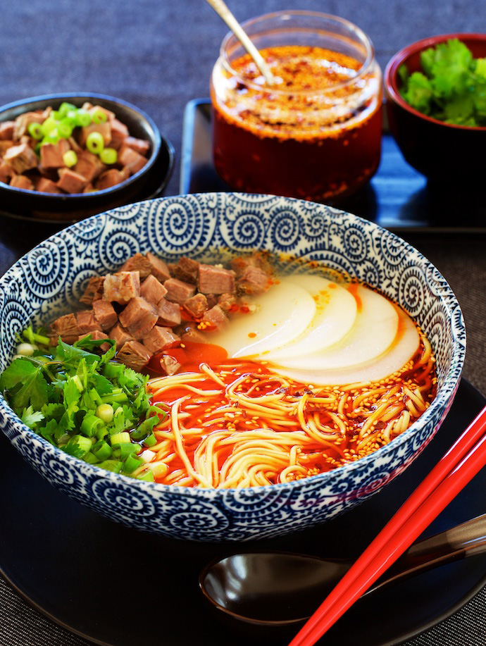

In our Chinese Cuisine Finder App,
we can assure you that we only list AUTHENTIC recipes and reputable resturants.
Before listing any of the recipes and resturants, we will make sure that they are approved by our Gourmet Team,
a diverse Chinese food guru team from across Asia.
1. Hainan Chicken Rice
CLICK FOR MORE INFO
2. Braised Pork Belly
CLICK FOR MORE INFO
3. Sweet & Sour Ribs
CLICK FOR MORE INFO
4. Cantonese Roasted Geese
CLICK FOR MORE INFO
5. Tian-jin Eight-Treasures Tofu
CLICK FOR MORE INFO
6. Spicy Sour Soup with Beef
CLICK FOR MORE INFO
7. Braised Pork Rice Bowl
CLICK FOR MORE INFO
8. Bak Kut Teh
CLICK FOR MORE INFO
9.
CLICK FOR MORE INFO

10.
CLICK FOR MORE INFO
11.
CLICK FOR MORE INFO
12.
CLICK FOR MORE INFO
Hainan Chicken Rice
Description: Hainan Chicken Rice is made with rice cooked with Chicken broth. It is a traditional dish in Hainan, the Southernmost tip of China. It is also very popular in places like Singapore and Malaysia.
Braised Pork Belly is a traditional Eastern Chinese dish that has a history of a thousand year. The pork is cut into thick square cuts and braised with wine, soy sauce and herbs. The mouthfeel is oily but never greasy.
Cantonese Roasted Goose is the all-time favorite of the people from the Canton Region. The marinating and cooking process takes almost a day.
The crispy skin of the Goose is the essence of the dish.
Bak Kut Teh, also known as bone soup, is usually made from parts like pork ribs, tail bones and pepper. It is a traditional dish from Fujian. It is very popular in Southern China and Singapore.
Bak Kut Teh, also known as bone soup, is usually made from parts like pork ribs, tail bones and pepper. It is a traditional dish from Fujian. It is very popular in Southern China and Singapore.